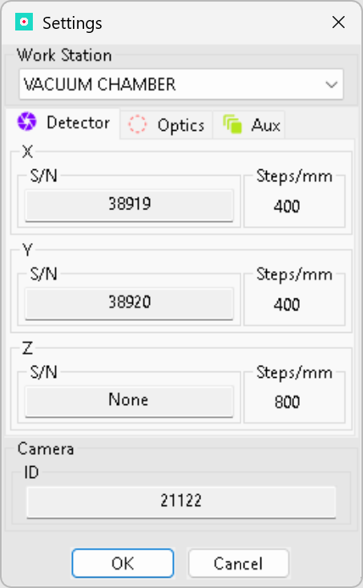

Work Station — Settings
This dialog defines the current work station preset used by MMCam. Open it with F2 after the first application initialization to view or change the active preset, reconnect a camera, or reconfigure motor assignments. Use this page to verify the camera ID and the motor serial numbers and steps/mm values supplied by the preset.

Controls and their meaning
- Work Station (preset selector)
- Select a saved preset containing camera, motor and stage assignments. A preset bundles one camera ID and up to nine motor entries grouped into three tabs: Detector, Optics and Aux.
- Tabs — Detector / Optics / Aux
- Each tab lists up to three motors assigned to that group. Use these to check or compare serial numbers, and Steps/mm that identify motor behavior and calibration values.
- S/N (serial number)
- Hardware serial number for the motor or stage. This must match the physical device connected to the controller. If S/N is missing or does not match, stage connection will fail or the wrong motor may be addressed.
- Steps/mm
- Calibration: how many stepper steps equal 1 millimeter of linear motion. Wrong steps/mm produces incorrect positioning and measurement errors — do not change this value unless you have a validated calibration procedure.
- Camera ID
- Numeric identifier of the camera used by this preset. This ID is applied when the preset is activated; MMCam uses it to target and reconnect the camera hardware.
- OK / Cancel
- Click OK to apply the selected preset and close the dialog. Click Cancel to close without applying changes.
How to use this dialog to reconnect camera and stages (step-by-step)
- Press F2 to open Work Station settings.
- From the Work Station drop-down, choose the preset you want to activate (if not already selected).
- Confirm the serial numbers (S/N) shown in Detector / Optics / Aux match the physical devices connected to the system.
- Confirm the Camera ID shown matches the camera you expect to use.
- Click OK to apply the preset. MMCam will attempt to (re)connect the camera and stages for that preset immediately after applying it.
- If a device is not present or fails to connect, consult the Troubleshooting section below before retrying.
Best-practice notes
- Do not change Steps/mm unless you have a validated calibration record. Incorrect values will produce inaccurate motion and measurements.
- When reconnecting during a live capture, prefer to stop capturing first if possible. If you must reconnect while capturing, be aware that motor commands issued during reconnection may fail or cause unexpected behavior.
- Keep a copy of your validated presets. Store one reference copy outside the application folder as the canonical backup for reproducible setups.
Troubleshooting checklist — connection failures
If the camera or a stage fails to connect after you apply a preset:
- Verify physical connections: power, USB/ethernet/cable and any hub devices. Reseat connectors.
- Confirm the exact hardware serial numbers: compare labels on the device with the S/N fields in the dialog.
- Confirm camera ID: if multiple cameras are present, the ID must match the physical camera the preset expects.
- Check that no other application is holding the device (camera or motor controller). Close other applications that may use the device.
- Inspect logs: collect the most recent `mmcam.log` entries (see Appendix) and include them with bug reports.
- If a motor repeatedly fails, try connecting one motor at a time to identify which hardware is misbehaving.
Note on "same preset" behaviour: Selecting the same preset that is already active should not force a disconnect/reconnect cycle. If you need to force a reconnect, change to a different preset and then switch back, or restart the application if hardware remains unresponsive.
End of Work Station — Settings documentation. For related material, see the User Interface Tour and Troubleshooting pages.